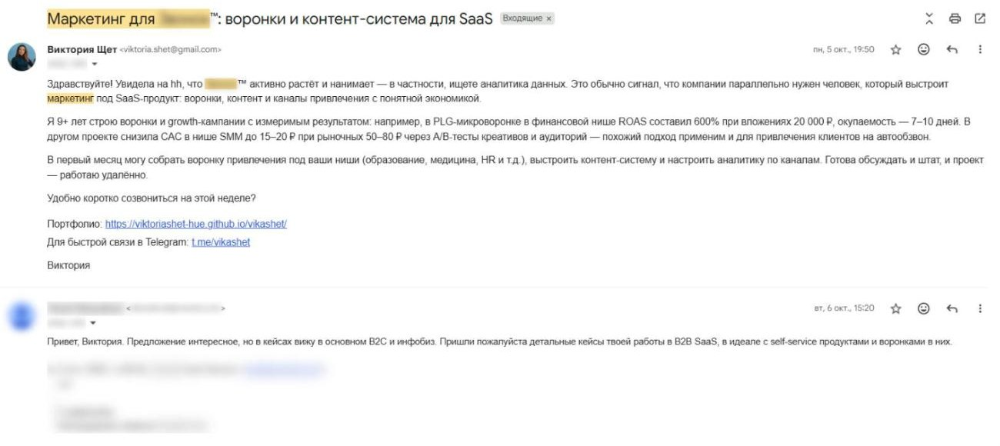
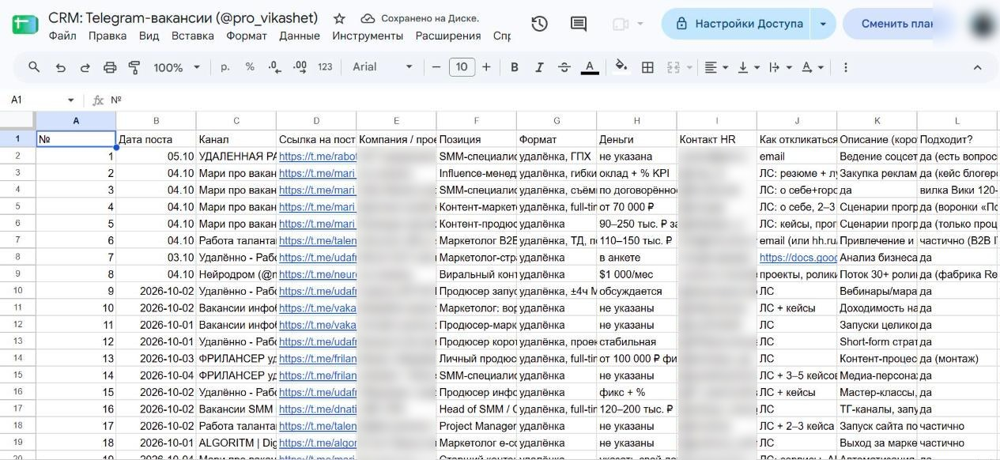

Пруфы
Скриншоты из рабочей системы
Названия компаний, имена и контакты скрыты.




Собрала мультиканальную систему лидогенерации на ИИ-агентах: база компаний с ЛПР, разбор маркетинга каждой, персональные сообщения в email, Telegram и на hh.kz и единая CRM. Ниже — честные цифры: что сработало, что нет и что я поменяла.
Я работаю одна. Нужно было системно выходить на клиники, стоматологии, вузы, застройщиков, SPA и агентства — так, чтобы каждое письмо выглядело написанным вручную, а не рассылкой.
≈400 компаний в 5 странах: клиники, стоматологии, вузы, застройщики, SPA, агентства. ≈450 доставленных персональных писем за 4 недели (9 октября – 7 ноября).
Агент сканирует 15+ каналов с вакансиями и заказами. За 96 часов нашёл и оценил 27 релевантных запросов, подготовил под каждый персональный отклик и занёс в CRM.
Агент на Python и Playwright подбирает вакансии по критериям и пишет сопроводительное письмо под каждую. 353 персональных отклика.
Единая таблица по всем каналам: статус, дата касания, следующий шаг. Вакансии SMM на hh используются как сигнал «компании нужен маркетинг прямо сейчас» — 68 таких компаний в базе.
| Направление | Писем | Ответов | Ответов, % |
|---|---|---|---|
| Массовый оффер «контент-завод» для бизнеса в 5 странах | ≈350 | ≈8 | ≈2,3% |
| Digital-агентства Алматы | ≈48 | 4 | ≈8% |
| Отклики на вакансии | ≈40 | 1 | ≈2,5% |
| Персональный разбор конкретной компании | 15 | 2 | 13% |
| Итого | ≈450 | 15 | ≈3,3% |
Учтены только доставленные письма — без дублей и ошибочных адресов. Ответы считаются по почте и Telegram. Итоги воронки: 1 коммерческое предложение (миграционная компания), 1 запрос резюме от агентства, диалог с коучинговой школой в ОАЭ.
Открыть дашборд со всеми цифрами →
Названия компаний, имена и контакты скрыты.


Первое касание — WhatsApp и Telegram, email вторым. В Казахстане бизнес отвечает в мессенджерах быстрее.
После 7 сообщений подряд Telegram ограничил аккаунт за спам. Теперь жёсткий лимит 10–15 первых сообщений в день, случайные паузы 6–20 минут и уникальный текст под каждого получателя.
Вместо продажи услуги — бесплатный короткий разбор: где компания теряет клиентов. Без цен и пакетов в первом сообщении.
Фокус на нишах, где разбор ответил лучше: клиники, SPA, онлайн-школы, агентства. Меньше стран — больше глубины.
Считаю не отправленные письма, а ответы, разговоры и КП по каждому сегменту — и отключаю то, что не работает.
База, разбор, персональные сообщения в email и мессенджерах и CRM — чтобы отдел продаж говорил с тёплыми клиентами, а не искал их.
Написать в Telegram viktoria.shet@gmail.com